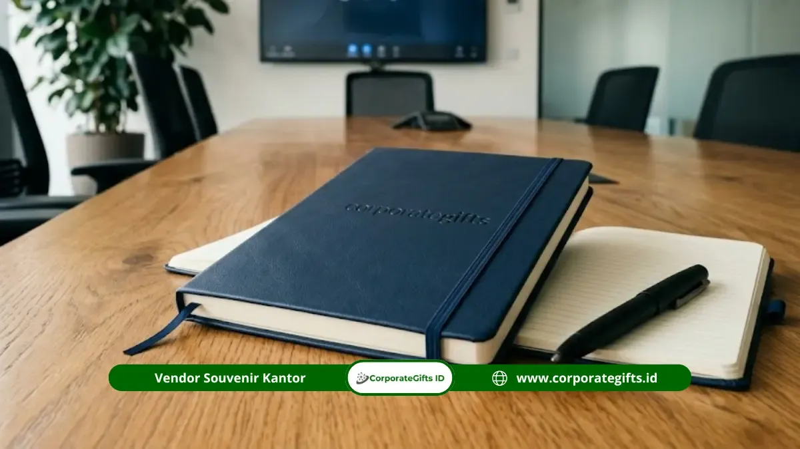

Corporate Gifts ID - Harga souvenir kantor custom 2026 umumnya berkisar antara Rp15.000 hingga Rp400.000 per pcs, dipengaruhi oleh jenis souvenir kantor, material bahan baku, teknik kustomisasi cetak logo, serta volume kuantitas pemesanan minimum (MOQ).
Poin Kunci Harga Souvenir Kantor Custom 2026:
- Tingkatan Harga: Kategori ekonomis mulai Rp15.000 - Rp40.000/pcs, kategori menengah Rp40.000 - Rp150.000/pcs, dan corporate gift premium Rp150.000 - Rp400.000+/pcs.
- Standar MOQ Vendor: Minimal pemesanan standar umumnya 50 - 100 pcs, dengan titik harga grosir terbaik pada rentang 100 - 300 pcs.
- Faktor Penentu Biaya: Material bahan, teknik cetak logo (sablon, laser grafir, print UV, deboss), kompleksitas desain, dan volume pesanan.
- Lead Time Produksi: Waktu pengerjaan standar berkisar 7 - 14 hari kerja, dengan opsi layanan express untuk agenda mendesak.
- Alokasi Budget Perusahaan: Anggaran promosi fisik dan merchandise kantor berkisar 15 - 20 persen dari total biaya pemasaran korporat.
Berapa Kisaran Harga Souvenir Kantor Custom per Pcs di 2026?
Harga souvenir kantor custom per pcs di 2026 umumnya terbagi dalam tiga tingkatan utama yaitu ekonomis, menengah, dan premium, tergantung pada fungsi produk serta volume pengadaan perusahaan:
- Tingkat Ekonomis (Rp15.000 - Rp40.000): Berlaku untuk produk fungsional harian seperti pulpen promosi, blocknote seminar, stiker, dan pouch spunbond yang dipesan massal untuk seminar atau expo.
- Tingkat Menengah (Rp40.000 - Rp150.000): Mencakup produk favorit seperti tumbler stainless SUS 304, mug keramik, powerbank promosi, dan tote bag kanvas untuk gathering karyawan serta cinderamata klien reguler.
- Tingkat Premium (Rp150.000 - Rp400.000+): Mencakup executive gift set, agenda kulit deboss, jam meja eksklusif, dan plakat penghargaan untuk apresiasi direksi serta mitra VIP.
Berdasarkan riset pasar global oleh The Business Research Company 2026, nilai industri corporate gifting diproyeksikan tumbuh dari USD 886,56 miliar menjadi USD 956,93 miliar dengan CAGR 7,9 persen. Tren ini mendorong institusi dan korporasi di Indonesia menyusun anggaran cenderamata kantor secara lebih terukur dan terencana.
Apa Saja Faktor yang Memengaruhi Harga Souvenir Kantor?
Rincian penawaran harga souvenir kantor custom sangat dipengaruhi oleh sejumlah elemen teknis produksi:
- Jenis & Material Produk: Produk berbahan plastik atau spunbond memiliki HPP lebih rendah dibandingkan logam stainless steel, kulit sintetis premium, atau kayu solid.
- Teknik Cetak Logo: Sablon satu warna adalah yang paling ekonomis, sedangkan laser engraving, UV printing full color, bordir komputer, dan deboss kulit memerlukan mesin khusus.
- Jumlah Warna & Sisi Cetak: Setiap penambahan warna sablon atau sisi bidang cetak akan memengaruhi biaya setting dan waktu pengerjaan.
- Volume Kuantitas Pesanan: Skala ekonomi berlaku penuh dalam pengadaan souvenir; semakin banyak jumlah pcs yang dipesan, semakin murah biaya satuan per item.
- Finishing & Packaging Box: Penggunaan kemasan hardbox magnetik beludru atau sliding sleeve menambah nilai estetika sekaligus biaya dibandingkan kemasan plastik standar.
- Kecepatan Produksi (Express Delivery): Permintaan deadline kilat di bawah standar waktu reguler biasanya dikenakan biaya lembur produksi (rush fee).

Kombinasi set notebook agenda kulit, pulpen metal grafir, dan tumbler stainless dalam kemasan hardbox eksklusif.
Tabel Lengkap Harga Souvenir Kantor Per Kategori Produk dan MOQ 2026
Tabel berikut menyajikan rincian estimasi kisaran harga satuan dan batas Minimum Order Quantity (MOQ) berdasarkan katalog resmi CorporateGifts.ID:
| Kategori Produk | Contoh Item Produk | Tingkat Harga | Kisaran Harga per Pcs (Indikatif) | MOQ Umum |
|---|---|---|---|---|
| Alat Tulis & Kertas | Pulpen promosi, blocknote spiral, notebook custom | Ekonomis | Rp15.000 - Rp40.000 | 50 - 100 pcs |
| Tas & Pouch Promosi | Tote bag spunbond, pouch serut, goodie bag kanvas | Ekonomis - Menengah | Rp25.000 - Rp60.000 | 50 - 100 pcs |
| Drinkware & Tableware | Mug keramik sablon decal, tumbler plastik BPA-Free | Menengah | Rp40.000 - Rp80.000 | 50 - 100 pcs |
| Tumbler Vacuum Premium | Tumbler stainless SUS 304, smart tumbler LED suhu | Menengah - Atas | Rp75.000 - Rp180.000 | 50 - 100 pcs |
| Aksesoris Teknologi & IT | Powerbank fast charge, flashdisk kartu, mousepad custom | Menengah | Rp50.000 - Rp150.000 | 50 - 100 pcs |
| Apparel & Seragam Brand | Kaos polo katun pique, topi drill bordir komputer | Menengah | Rp60.000 - Rp150.000 | 24 - 50 pcs |
| Corporate Gift Set VIP | Executive gift set (agenda kulit, pen metal, cardholder) | Premium | Rp150.000 - Rp350.000+ | 20 - 50 pcs |
| Plakat & Award Instansi | Plakat akrilik grafir, plakat kayu kuningan etsa | Premium | Rp150.000 - Rp400.000+ | Mulai 1 - 10 pcs |
*Catatan: Harga di atas bersifat indikatif dan dapat disesuaikan secara fleksibel sesuai dengan volume kuantitas, spesifikasi bahan, dan penyesuaian anggaran DIPA/RKA perusahaan Anda.
Berapa Harga Souvenir Kantor untuk Budget di Bawah Rp50.000?
Dengan alokasi anggaran di bawah Rp50.000 per pcs, perusahaan tetap dapat menghadirkan merchandise promosi yang fungsional dan berkesan profesional. Pilihan terbaik meliputi pulpen metal promosi, blocknote spiral A5, tote bag spunbond 100 gsm, atau mug keramik sablon satu warna.
Kuncinya adalah mengutamakan utilitas barang harian dan menyederhanakan palet warna logo agar biaya cetak efisien tanpa mengurangi estetika visual brand.
Apa Perbedaan Harga Souvenir Kantor Reguler dan Corporate Gift Premium?
Perbedaan mendasar tidak hanya terletak pada besaran angka nominal, melainkan tujuan strategis pemberiannya:
- Souvenir Kantor Reguler: Dibuat massal untuk efisiensi biaya per pax pada event besar seperti pelatihan, pameran, dan gathering umum.
- Corporate Gift Premium: Dirancang bespoke dengan sentuhan mikro-personalisasi (seperti grafir nama penerima pada pulpen atau deboss inisial pada agenda) untuk memperkuat retensi hubungan kemitraan B2B tingkat tinggi.
Berapa Minimal Order (MOQ) untuk Souvenir Kantor Custom?
Batas minimal pemesanan (MOQ) standar di industri vendor berkisar antara 50 hingga 100 pcs untuk produk sablon dan cetak digital. Titik harga grosir paling kompetitif umumnya mulai terbuka pada volume 100 hingga 300 pcs. Khusus produk berkarakter personalisasi seperti plakat akrilik, trophy, atau hampers purnabakti, pemesanan dapat dilayani dalam jumlah satuan (mulai dari 1 pcs).
Bagaimana Cara Menghemat Biaya Souvenir Kantor Tanpa Mengurangi Kualitas?
Berikut strategi procurement cerdas untuk memaksimalkan efisiensi anggaran merchandise:
- Konsolidasi Volume Antar-Divisi: Gabungkan kebutuhan souvenir beberapa divisi atau rangkaian acara satu semester agar kuantitas pesanan mencapai tier grosir termurah.
- Pilihan Material Cerdas: Pilih alternatif bahan yang kokoh namun ekonomis, seperti kanvas tebal dibanding genuine leather.
- Desain 1-Warna yang Kontras: Manfaatkan warna dasar material produk sebagai latar kontras untuk logo sablon 1 warna.
- Pemesanan Lebih Awal: Hindari biaya express rush fee dengan memesan 3-4 minggu sebelum agenda acara digelar.
- Validasi Mockup Digital: Pastikan approval visual layout disetujui sebelum proses produksi massal dijalankan.
Contoh Ilustrasi Alokasi Anggaran Souvenir Kantor untuk Berbagai Skala Acara
Sebagai panduan perhitungan, berikut skenario alokasi anggaran nyata dalam operasional perusahaan:
- Seminar Internal (200 Pax): Pulpen promosi + blocknote custom @Rp30.000 = Total Rp6.000.000.
- Apresiasi Pegawai & Gathering (50 Pax): Tumbler stainless SUS 304 grafir @Rp85.000 = Total Rp4.250.000.
- Year-End Gift Klien Strategis (15 Klien VIP): Executive gift set kulit @Rp250.000 = Total Rp3.750.000.
- New Employee Onboarding Kit (30 Pax): Welcome kit box (notebook agenda, pulpen, tumbler) @Rp120.000 = Total Rp3.600.000.
Apa Saja Kesalahan Umum saat Menganggarkan Souvenir Kantor?
Hindari 4 jebakan umum berikut saat menyusun anggaran pengadaan cinderamata:
- Hanya Mengejar Harga Termurah: Barang berkualitas rendah rentan rusak dan menimbulkan persepsi negatif terhadap reputasi brand perusahaan.
- Mengabaikan Komponen Biaya Tambahan: Lupa memperhitungkan PPN, biaya setting layout khusus, atau ongkos kirim kargo antar-pulau.
- Pemesanan Terlalu Mepet: Waktu produksi sempit membatasi proses Quality Control dan meningkatkan risiko keterlambatan pengiriman.
- Salah Sasaran Produk: Membagikan souvenir mewah pada forum massal atau sebaliknya memberikan barang promosi murah kepada klien VVIP.
Pertanyaan Umum Seputar Harga Souvenir Kantor (FAQ)
Kesimpulan Praktis
Harga souvenir kantor custom 2026 sangat bervariasi tergantung kategori produk, material, teknik cetak, dan volume pesanan, sehingga perencanaan anggaran sebaiknya dimulai dari kebutuhan acara, bukan sekadar mengejar harga termurah.
Konsultasikan kebutuhan merchandise dan souvenir perusahaan Anda bersama CorporateGifts.ID. Jelajahi pilihan produk di katalog produk resmi kami atau ajukan permohonan RAB melalui formulir permintaan penawaran harga sekarang juga untuk mendapatkan layanan profesional bergaransi tepat waktu.
Disclaimer: Estimasi biaya dan spesifikasi item souvenir kantor dalam panduan ini dapat disesuaikan secara fleksibel dengan alokasi budget instansi atau perusahaan Anda melalui tim konsultan resmi CorporateGifts.ID.